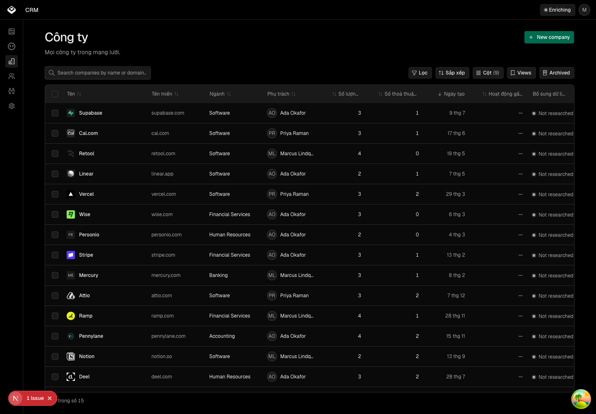
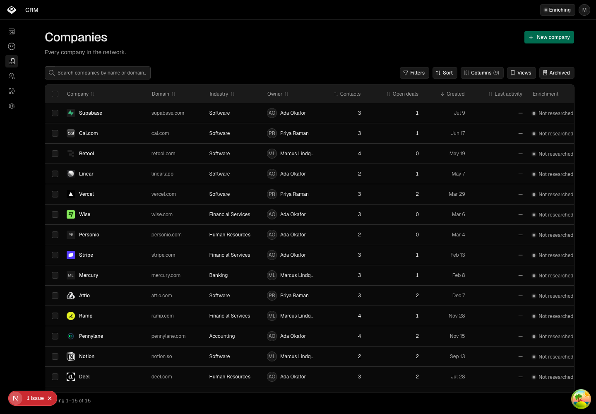
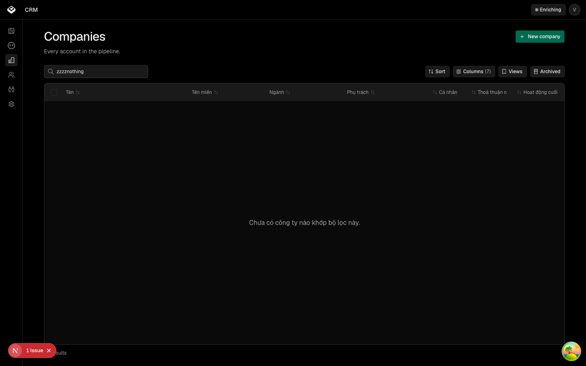

Xương sống ngôn ngữ — nhân viên chọn tiếng Việt một lần, màn công ty hiện trọn tiếng Việt
Các eval
| Eval | Tiêu chí | Loại | Verdict | run_id | verified_at |
|---|---|---|---|---|---|
| E6 | AC-6 | ui-check | FAIL | tieng-viet-cho-crm-r2-E6 | 2026-09-02T02:41:54Z |
| E9 | AC-9 | ui-check | UNCERTAIN | tieng-viet-cho-crm-r2-E9 | 2026-09-02T02:41:54Z |
| E12 | AC-11 | judgment | UNCERTAIN | — | — |
| E1 | AC-1 | ui-check | PASS | tieng-viet-cho-crm-r2-E1 | 2026-09-02T02:41:54Z |
| E2 | AC-2 | ui-check | PASS | tieng-viet-cho-crm-r2-E2 | 2026-09-02T02:41:54Z |
| E3 | AC-3 | ui-check | PASS | tieng-viet-cho-crm-r2-E3 | 2026-09-02T02:41:54Z |
| E4 | AC-4 | script | PASS | tieng-viet-cho-crm-r2-E4 | 2026-09-02T02:41:54Z |
| E5 | AC-5 | script | PASS | tieng-viet-cho-crm-r2-E5 | 2026-09-02T02:41:54Z |
| E7 | AC-7 | script | PASS | tieng-viet-cho-crm-r2-E7 | 2026-09-02T02:41:54Z |
| E8 | AC-8 | script | PASS | tieng-viet-cho-crm-r2-E8 | 2026-09-02T02:41:54Z |
| E10 | AC-10 | ui-check | PASS | tieng-viet-cho-crm-r2-E10 | 2026-09-02T02:41:54Z |
| E11 | AC-12 | ui-check | PASS | tieng-viet-cho-crm-r2-E11 | 2026-09-02T02:41:54Z |
| E1 | không | `vi-vn,vi;q=0.9` | `VI` | tieng-viet-cho-crm-r2-E1 | 2026-09-02T02:41:54Z |
| E2 | không | `en-us,en;q=0.9` | `EN` | tieng-viet-cho-crm-r2-E2 | 2026-09-02T02:41:54Z |
| E3 | `lang=vi` | `en-us,en;q=0.9` | `VI` | tieng-viet-cho-crm-r2-E3 | 2026-09-02T02:41:54Z |
| E11 | `lang=en` | `vi-vn,vi;q=0.9` | `EN` | tieng-viet-cho-crm-r2-E11 | 2026-09-02T02:41:54Z |
| E4 | `lang=zz-ZZ-nonsense` | `vi-vn,vi;q=0.9` | `EN` | tieng-viet-cho-crm-r2-E4 | 2026-09-02T02:41:54Z |
Chi tiết từng eval
FAIL E6 · ui-check
AC-6: Given người dùng đang ở tiếng Việt, When họ mở màn công ty, Then mọi chữ NHÌN THẤY của giao diện là tiếng Việt — kể cả ba chuỗi bảng dùng chung nhận từ ngoài vào (`empty`, `facet.empty`, `tabs.allLabel`). Mục trừ hai nhãn trình-đọc-màn-hình của bản ký ngày 2026-09-01 đã bỏ: vòng ② đóng cả hai, nên tiêu chí này nay không còn ngoại lệ nào.





UNCERTAIN E9 · ui-check
AC-9: Given chuỗi tiếng Việt dài hơn chuỗi tiếng Anh tương ứng, When màn công ty hiện ở bề rộng 768px, Then không TIÊU ĐỀ CỘT nào bị cắt cụt; ô dữ liệu dài vẫn được phép cắt kèm dấu ba chấm.
Phán đoán: Không tiêu đề nào bị chém trần ở bất kỳ bề rộng nào, ở cả hai thứ tiếng — lỗi vòng chấm 1 tìm ra đã đóng. Nhưng ở 768px có bốn tiêu đề bị cắt kèm dấu ba chấm, và câu chữ AC-9 cấm tiêu đề bị cắt, trong khi AC-7 của vòng ② mà người đã ký lại quy định tiêu đề bị cắt phải cắt thế nào. Hai tiêu chí nghịch nhau; máy không tự chọn được cái nào thắng.
UNCERTAIN E12 · judgment
AC-11: Given bản tiếng Việt của màn công ty, When một nhân viên quan hệ đối tác đọc nó, Then chữ đọc như tiếng Việt của người trong nghề, không phải như một bản dịch máy.
Phán đoán: Vòng chấm chữ 1 — ba người, cả ba KHÔNG ĐẠT, năm nhãn đổi theo chỗ hai người trở lên cùng chỉ. Vòng chấm chữ 2 trên nhãn mới — một ĐẠT, hai KHÔNG ĐẠT. Hai người đề xuất một sửa duy nhất giống nhau, người thứ ba đòi hướng ngược lại, và phép đo đứng về phía người thứ ba: bản sửa hai người đề xuất làm hai nhãn kề nhau chỉ khác nhau từ ký tự thứ 10 thay vì thứ 4 khi bị cắt ở 1024px. Mỗi hướng đều có một cái giá đo được.
PASS E1 · ui-check
AC-1: Given người dùng chưa từng chọn tiếng và trình duyệt của họ khai ưu tiên tiếng Việt, When họ mở CRM lần đầu, Then màn hình hiện tiếng Việt.
PASS E2 · ui-check
AC-2: Given người dùng chưa từng chọn tiếng và trình duyệt khai ưu tiên tiếng Anh, When họ mở CRM, Then màn hình hiện tiếng Anh.
PASS E3 · ui-check
AC-3: Given người dùng đã chọn tiếng Việt, When trang được máy chủ dựng, Then thẻ `<html lang>` mang giá trị `vi` NGAY Ở LƯỢT VẼ ĐẦU, không phải sau một lượt vẽ lại.

PASS E4 · script
AC-4: Given lựa chọn ngôn ngữ đã lưu mang một giá trị không phải thẻ ngôn ngữ hợp lệ, When người mở CRM, Then màn hình rơi về tiếng Anh và không có lỗi nào nổ.
PASS E5 · script
AC-5: Given người dùng đổi sang tiếng Việt rồi đóng trình duyệt, When họ quay lại, Then màn hình vẫn tiếng Việt.
PASS E7 · script
AC-7: Given một công ty có tên do người nhập, When màn hình hiện ở tiếng Việt, Then tên đó giữ nguyên như đã nhập VÀ được đánh dấu để trình duyệt không tự dịch.
PASS E8 · script
AC-8: Given người dùng đang ở tiếng Việt, When màn công ty hiện ngày và số, Then chúng theo quy ước tiếng Việt, và trong phạm vi vòng này không còn chỗ nào khai cứng một vùng.
PASS E10 · ui-check
AC-10: Given người dùng chỉ dùng bàn phím, When họ nhấn Tab tới nút đổi tiếng rồi Enter, Then nút hiện vòng tiêu điểm NHÌN THẤY ĐƯỢC trong ảnh chụp, và menu mở ra.
PASS E11 · ui-check
AC-12: Given người dùng đã chọn tiếng Anh và trình duyệt của họ khai ưu tiên tiếng Việt, When họ mở CRM, Then màn hình hiện tiếng Anh — lựa chọn đã lưu thắng ngôn ngữ trình duyệt.
`VI` E1 · `vi-vn,vi;q=0.9`
không
`EN` E2 · `en-us,en;q=0.9`
không
`VI` E3 · `en-us,en;q=0.9`
`lang=vi`
`EN` E11 · `vi-vn,vi;q=0.9`
`lang=en`
`EN` E4 · `vi-vn,vi;q=0.9`
`lang=zz-ZZ-nonsense`
Eval không phân biệt (Analyst)
Variance (eval ngẫu nhiên)
Vòng verify
- Vòng chấm 2 (2026-09-02): E6 còn 4 chuỗi, tất cả là chuỗi khoá cứng tại chỗ gọi
- trong `apps/app` — vòng ③. E9 trượt theo câu chữ, đạt theo chất, và hai cách đọc
- nghịch nhau vì AC-7 của vòng ② nay quy định điều AC-9 cấm. E8 lộ ra đã ĐẠT NHẦM
- ở vòng chấm 1 và đã sửa. Năm nhãn cột đổi theo vòng người lạ lái thử và hội đồng.